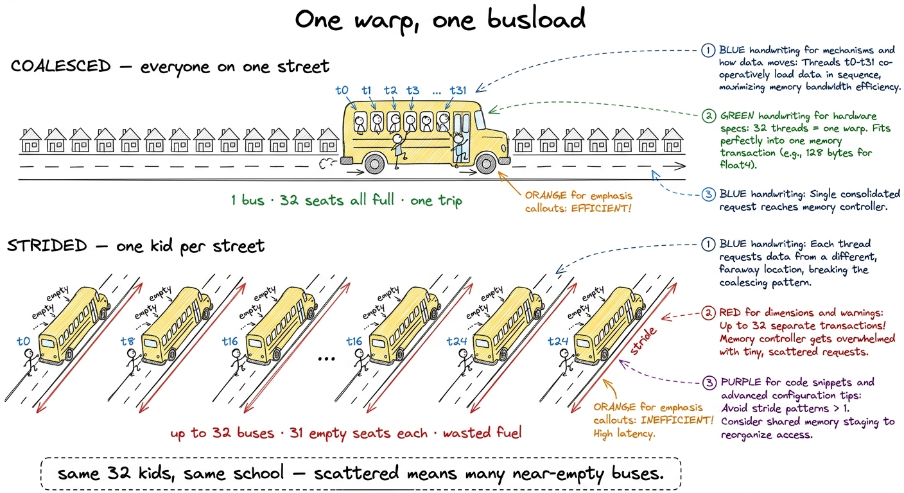
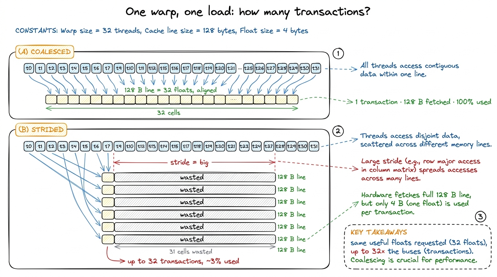
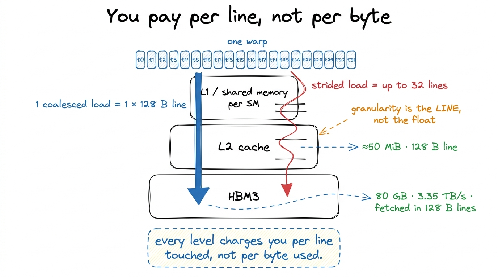
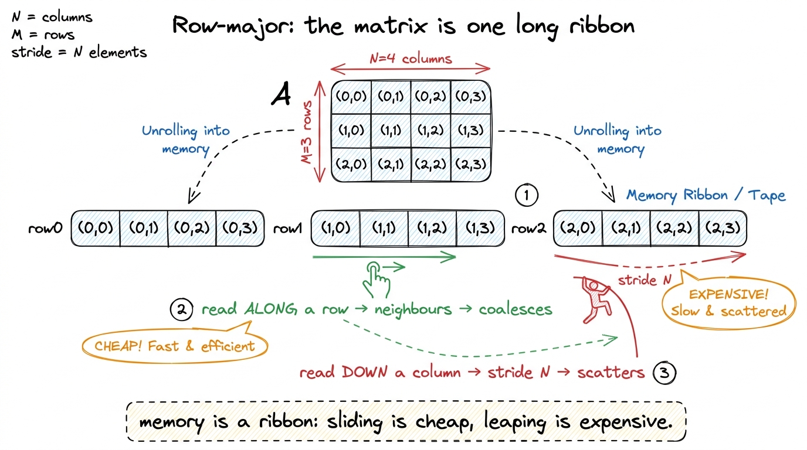
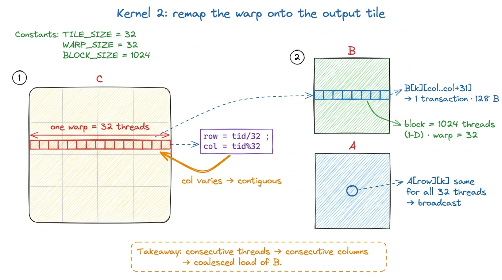
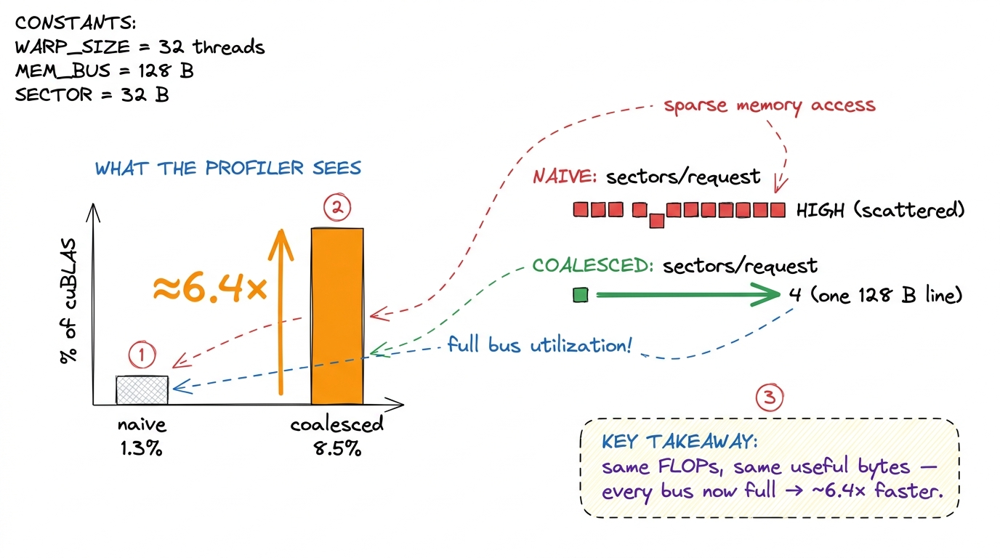

Coalescing: everybody boards the same bus
By the end of this chapter you'll be able to stand at a whiteboard and teach memory coalescing — why 32 threads reading neighbouring addresses fetch their data in a single trip, why 32 threads reading scattered addresses waste almost the whole trip, and why fixing this is the cheapest big speedup in the entire workshop. You need no electronics. You need one bus, one metaphor, and one honest number.
This is the first real optimization students will meet after the naive kernel. And it's the sweetest one to teach, because it changes nothing about the math. Same multiplies. Same adds. Same bytes we care about. We just read them in the right order — and the kernel runs several times faster. That contrast is the whole lesson: the pattern of access, not the amount, decides your speed.
The one idea: memory comes in busloads, not by the person
Start with the fact that reorganizes everything. A GPU does not fetch one number at a time from memory. When you ask for a float, the memory system doesn't hand you back four lonely bytes. It hands back a whole fixed-size chunk — a 128-byte line, which happens to be exactly 32 consecutive floats — whether you wanted all of them or just one.
So memory doesn't run like a taxi that carries one passenger to one door. It runs like a bus: it always makes the trip with a full 32-seat vehicle, and the only question that matters for speed is how many buses you have to dispatch.

figure rendering · The core metaphor: a warp is a busload. Neighbours ride together in onThat's the entire chapter in one picture. Everything from here is making "same street" precise and showing students where a real kernel accidentally scatters the kids.
The tiny by-hand number: 1 bus vs 32 buses
Put concrete numbers on the board so it stops being a vibe and becomes arithmetic.
A warp is 32 threads. A memory line is 128 bytes. A float is 4 bytes. So one line = 128 / 4 = 32 floats — one line holds exactly one warp's worth of floats. That coincidence is the whole reason this works out so cleanly, and it's worth pausing on.
t reads the float at position t: thread 0 reads float 0, thread 1 reads float 1, … thread 31 reads float 31. All 32 addresses fall inside one 128-byte line. One trip. 128 bytes fetched, 128 bytes used. 100% useful. Case B — strided. Thread t reads the float at position t × 1000: thread 0 reads float 0, thread 1 reads float 1000, thread 2 reads float 2000… Every address lands in a different line. 32 trips. You fetch 32 × 128 = 4096 bytes and use 32 × 4 = 128 of them. That's about 3% useful; 97% thrown away.Say that last number out loud and let it land. Same 32 floats wanted in both cases. Case A costs one trip; Case B costs thirty-two. The bytes you care about are identical — the bytes you're charged for differ by 32×.
The real mechanism, built up gently
Now name the machinery, one term at a time, each defined as it arrives.
A warp is a group of 32 threads that execute the same instruction at the same time. When a warp hits a load instruction, the memory system does not see 32 independent requests. It gathers the 32 addresses those threads want and asks: how many fixed-size lines do these addresses touch?
The line is 128 bytes, aligned to a 128-byte boundary — 32 consecutive floats.1 On Hopper (H100) the 128-byte line is split into four 32-byte sectors, and the hardware can fetch just the sectors it needs. So a partial access wastes down to 32-byte granularity, not the full 128. For teaching, "128-byte busload" is the right first picture; mention sectors only if a sharp student asks why the waste isn't always exactly 32×. If the warp's 32 addresses all fall inside one line, the hardware runs one memory transaction — one bus. If they scatter across 32 lines, it runs up to 32 transactions — 32 buses.2 "Up to" because if two threads happen to land in the same 128-byte line, they share a bus. Worst case — a large stride — gives every thread its own line and hits the full 32× penalty squarely.
That's it. That's the whole rule: for one load by one warp, coalescing asks how many lines the 32 addresses touch. One line is the dream. Thirty-two is the disaster. Nothing about the amount of useful data changed — only the pattern.
Say a word about the road the data travels, because it explains why the line is the unit. A load walks a fixed path — from HBM (the far, huge memory) up through the L2 cache, into the fast on-chip memory near the cores, and finally into registers. Every rung of that path is priced in whole lines, never in single floats. So you pay per line touched, not per byte used. That single sentence is why a strided load is so ruinous: it touches many lines to use one float from each.

figure rendering · The technical translation of the bus picture: whether one load costs o
figure rendering · The path a load travels: HBM → L2 → L1/shared → registers, priced in fWhy does anyone ever scatter? Because of layout
The cruel part is that scattering happens by accident, in code that looks perfectly reasonable and computes the correct answer. To see why, students need one fact about how matrices sit in memory.
C and CUDA store a 2-D array in row-major order: the element A[i][j] lives at linear position i × N + j. Read that carefully with students. Elements along a row (increasing j) are right next to each other — positions …, i·N+j, i·N+j+1, …, one float apart. Elements down a column (increasing i) are N floats apart — a giant jump.

figure rendering · Row-major layout drawn as a ribbon: neighbouring columns are adjacentSo the entire coalescing verdict for any matrix access collapses to a single question you can teach students to ask every time:
As the thread number increases across a warp, does the column index change, or the row index?
Column-changing means neighbours on the ribbon — coalesced, one bus. Row-changing means leaping by N — scattered, many buses. That one question is the whole diagnostic skill, and it's the thing students should carry out of this workshop even if they forget every number: look at what moves as the thread index rises, and ask whether that motion slides along memory or leaps across it.
Where it bites the naive kernel
Now connect it to the kernel from the matmul chapters, because this is where the abstract idea becomes a real 6× on a real GPU.
In the naive kernel the two loads inside the inner loop are A[row·N + k] and B[k·N + col]. The threads of a warp differ in col (the fast axis) while sharing the same row. Trace it:
B[k·N + col]— as we step across the warp,colincreases by 1 each thread, so we walkB[k][col], B[k][col+1], …along a row of B. Neighbours on the ribbon. Coalesced — one bus. Good.A[row·N + k]—rowandkare the same for all 32 threads, so all 32 read the identical address. That's a broadcast, which the hardware also handles cheaply — one fetch, shared by all.
The honest point: the naive kernel isn't the worst case — B coalesces and A broadcasts. The trouble is that this happened by accident, from CUDA's default thread numbering, and it's fragile. The next kernel makes the good mapping on purpose, so you can reason about it and build on it.
The fix: one line, chosen deliberately
The remap is almost anticlimactically small — and that's the punchline you want students to feel. We flatten the thread block to 1-D and compute the 2-D position ourselves, so the fast-moving thread axis is guaranteed to land on the contiguous (column) axis:
const uint BLOCKSIZE = 32;
const uint row = blockIdx.y * BLOCKSIZE + (threadIdx.x / BLOCKSIZE);
const uint col = blockIdx.x * BLOCKSIZE + (threadIdx.x % BLOCKSIZE);
if (row < N && col < N) {
float acc = 0.0f;
for (int k = 0; k < N; ++k)
acc += A[row * N + k] * B[k * N + col];
C[row * N + col] = acc;
}The whole change is col = threadIdx.x % 32 and row = threadIdx.x / 32. Now a warp is exactly threadIdx.x = 0..31, so col runs 0..31 and row stays constant across the warp. Consecutive threads → consecutive columns → the B load is one clean 128-byte transaction per warp, and the A load is a tidy broadcast. We designed the good mapping instead of inheriting it by luck.
threadIdx.y — "one warp per row of the block, right?" No. CUDA flattens threads with x fastest: the linear index is threadIdx.x + threadIdx.y·blockDim.x. So a warp is 32 threads with consecutive threadIdx.x. Get this backwards and your entire coalescing analysis inverts — you'll call the coalesced load strided and vice versa. The fix: on the board, physically number the threads 0..31 by walking left-to-right along x FIRST, only wrapping to the next y-row after 32. "x fills up before y moves." Make them chant it.
figure rendering · The whole change: deciding on purpose that the warp's fast axis landsThe number that makes jaws drop
Here's the payoff to run as a live demo. The naive kernel sat at about 1.3% of cuBLAS (cuBLAS is NVIDIA's hand-tuned reference library — the speed everyone measures against). After the remap, the kernel jumps to about 8.5% of cuBLAS — roughly a 6.4× speedup. Write those two percentages on the board before you show the code change, so the size of the win is fixed in their minds when they see how small the change is.
nvidia-smi/Nsight and show two numbers on screen: the naive time and the coalesced time. Then show a diff of the source — it's two lines. The room's reaction to "6× faster, two lines, zero fewer multiplies" is the emotional peak of the memory section. If you can, open Nsight Compute and point at the metric l1tex__t_sectors_per_request (sectors fetched per load): the naive number is bloated; the coalesced one drops toward the ideal floor of 4 sectors per warp. That single metric is "how full were the buses."
figure rendering · The change is invisible in the FLOP count and loud in the memory metriBe honest about what it did not fix
Leave students with the right sense of proportion, or they'll think this was the whole game. Coalescing made each bus full — but it did nothing about the fact that we send far too many buses. The kernel still re-reads the same element of A from slow memory once for every thread that needs it. We're still hauling O(N³) floats from HBM to do O(N³) math — dreadful reuse.
That's the frame to end on. Coalescing is the cheapest big win — ~6×, zero math removed — precisely because it fixes waste, not work. And it's mandatory first: there's no point staging data into fast memory if the loads that fill it are scattered. Get the warp's fast axis onto contiguous memory. Then you've earned the right to be clever.
You can now teach
- The bus metaphor: a warp is a 32-seat busload, memory comes in 128-byte lines, and speed is just "how many buses did we dispatch?" — one for neighbours, up to 32 for scattered riders.
- The by-hand number: contiguous = 1 transaction, 100% used; strided = up to 32 transactions, ~3% used — same useful floats either way.
- The ribbon of row-major memory and the one diagnostic question: as the thread number rises, does the column index move (slide, coalesced) or the row index (leap, scattered)?
- Where it bites the naive matmul (B coalesces, A broadcasts — but only by accident) and the two-line remap that makes the good mapping deliberate.
- The warp-numbering trap (x fills before y moves) that flips students' whole analysis if they get it wrong — and how to drill it.
- The jaw-drop demo and production stakes: ~6.4× from two lines and zero fewer multiplies, and why every real kernel — vLLM, FlashAttention, DeepSeek — is designed around coalescing to hit 3.35 TB/s instead of a third of it.